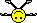

阿空 Kong
我有去遊行，只是這次低調的多。
2012-10-27 18:59:44
Responses :
latest
阿空 Kong
啊，不過有跟肖想了很久的對象合照到
RRRRRRay
說
照片!!
自言自語 ○(#‵︿′ㄨ)
說
是誰讓阿空朝思暮想~
≡buɐʎ♂sɹɐɯ≡.ts
我還以為你會綁六尺跟水男孩走 T_T
KeepSmileEveryDay
說
新大頭貼很帥
Jerome豬
沒看到阿空好桑星
伊諾。F
kong0107
: 真的太低調了!!!! 不過還好我有遇到帥帥阿空~
還第一次來個熱情擁抱~~~ 然後我突然覺得很對不起阿空!!我竟然一身汗還抱您 QQ
SALT.BB喵

咕哩哩
說
我也沒看到阿空！！
愛哭的色叔公
說
我看到阿空的背影...
一喜德一
說
沒看到
自言自語 ○(#‵︿′ㄨ)
說
enoshop
: 好羨慕喔~QQ
等待變成報廢品的老頭【羽】
說
enoshop
: 所以阿空這次是走北路線?我走南路線沒遇到
支持多元成家的海賊
說
我有看到你 超低調 不過身材真棒 : ）
乂艾瑞克乂
我有看到你跟？？手牽手走一起耶！
烈焰風痕影
沒遇到 [Q]
Z小芙★香蔥頭
說
得
傑弗瑞
說
阿空變好壯。